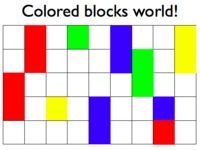
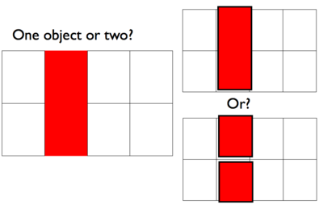

Entities should not be multiplied without necessity. –William of Ockham
In learning and perceiving we are fitting models to the data of experience. Typically our hypothesis space will span models varying greatly in complexity: some models will have many more free parameters or degrees of freedom than others. Under traditional approaches to model fitting we adjust each model’s parameters until it fits best, then choose the best-fitting model; a model with strictly more free parameters will tend to be preferred regardless of whether it actually comes closer to describing the true processes that generated the data. It then often generalizes less well – this is called over fitting.
But this is not the way the mind works. Humans assess models with a natural eye for complexity, balancing fit to the data with model complexity in subtle ways that will not inevitably prefer the most complex model. Instead we often seem to judge models using Occam’s razor: we choose the least complex hypothesis that fits the data well. In doing so we avoid over-fitting our data in order to support successful generalizations and predictions.
Fitting curves (or smooth functions) to sparsely sampled, noisy data provides a familiar example of the problem.
The figure above shows three polynomial fits: a 1st-order (linear), a 2nd-order (quadratic), and a 12th-order polynomial. How do our minds decide which of these functions provides the best account of the data? The 1st-order model captures the rough trend of the data but seems too coarse; it attributes some of the variation that we see as “signal” to “noise”. The 2nd-order model seems best; it seems to be just complex enough to fit the main shape of the data without over-fitting the noise. The 12th-order model seems ridiculously over-fit; with 13 data points, the parameters can be adjusted so as to make the curve pass exactly through every data point, thus taking as “signal” all of what we see as “noise”. Again we can think of this as a causal inference problem: each function represents a hypothesis about the causal process that gave rise to the observed data, including the shape of the function from inputs to outputs, as well as the level of noise added to the output.
An elegant and powerful form of Occam’s razor arises in the context of Bayesian inference, known as the Bayesian Occam’s razor. Bayesian Occam’s razor refers to the fact that “more complex” hypotheses about the data are penalized automatically in conditional inference. In many formulations of Occam’s razor, complexity is measured syntactically: for instance, it may be the description length of the hypothesis in some representation language, or a count of the number of free parameters used to specify the hypothesis. Syntactic forms of Occam’s razor have difficulty justifying the complexity measure on principled, non-arbitrary grounds. They also leave unspecified exactly how the weight of a complexity penalty should trade off with a measure of fit to the data. Fit is intrinsically a semantic notion, a matter of correspondence between the model’s predictions and our observations of the world. When complexity is measured syntactically and fit is measured semantically, they are intrinsically incommensurable and the trade-off between them will always be to some extent arbitrary.
In the Bayesian Occam’s razor, both complexity and fit are measured semantically. The semantic notion of complexity is a measure of flexibility: a hypothesis that is flexible enough to generate many different sets of observations is more complex, and will tend to receive lower posterior probability than a less flexible hypothesis that explains the same data. Because more complex hypotheses can generate a greater variety of data sets, they must necessarily assign a lower probability to each one. When we condition on some data, all else being equal, the posterior distribution over the hypotheses will favor the simpler ones because they have the tightest fit to the observations.
From the standpoint of a probabilistic programming language, the Bayesian Occam’s razor is essentially inescapable. We do not judge models based on their best fitting behavior but rather on their average behavior. No fitting per se occurs during conditional inference. Instead, we draw conditional samples from each model representing the model’s likely ways of generating the data. A model that tends to fit the data well on average – to produce relatively many generative histories with that are consistent with the data – will do better than a model that can fit better for certain parameter settings but worse on average.
It is convenient to emphasize an aspect of probabilistic modeling that seems deceptively trivial, but comes up repeatedly when thinking about inference. In Bayesian statistics we think of probabilities as being degrees of belief. Our generative model reflects world knowledge and the probabilities that we assign to the possible sampled values reflect how strongly we believe in each possibility. The laws of probability theory ensure that our beliefs remain consistent as we reason.
A consequence of belief maintenance is known as the Law of Conservation of Belief. Here are two equivalent formulations of this principle:
The latter formulation leads to a common metaphor in discussing generative models: We can usefully think of belief as a “currency” that is “spent” by the probabilistic choices required to construct a sample. Since each choice requires “spending” some currency, an outcome that requires more choices to construct it will generally be more costly, i.e. less probable.
It is this conservation of belief that gives rise to the Bayesian Occam’s razor. A hypothesis that spends its probability on many alternatives that don’t explain the current data will have less probability for the alternatives that do, and will hence do less well overall than a hypothesis which only entertains options that fit the current data. We next examine a special case where this tradeoff plays out clearly, the size principle, then come back to the more general cases.
A simple case of Bayes Occam’s razor comes from the size principle [@Tenenbaum2001]: Of hypotheses which generate data uniformly, the one with smallest extension that is still consistent with the data is the most probable.
The following program demonstrates the size principle with a very simple model. Here we have two hypothesized sets: Big has 6 elements and Small has 3 elements. The generative model chooses one of the hypotheses at random and samples some number of symbols from it uniformly. We then wish to infer the hypothesis given observed elements.
var hypothesisToDist = function(hyp) {
return (hyp == 'Big' ?
Categorical({vs: ['a', 'b', 'c', 'd', 'e', 'f'], ps: [1/6, 1/6, 1/6, 1/6, 1/6, 1/6]}) :
Categorical({vs: ['a', 'b', 'c'], ps: [1/3, 1/3, 1/3]}));
}
var data = ['a']
var post = Infer({method: 'enumerate'}, function(){
var hypothesis = flip() ? 'Big' : 'Small'
mapData({data: data}, function(d){observe(hypothesisToDist(hypothesis),d)})
return hypothesis
})
viz(post)
With a single observed a, we already favor hypothesis Small. What happens when we increase the amount of observed data? Consider the learning trajectory:
///fold:
var hypothesisToDist = function(hyp) {
return (hyp == 'Big' ?
Categorical({vs: ['a', 'b', 'c', 'd', 'e', 'f'], ps: [1/6, 1/6, 1/6, 1/6, 1/6, 1/6]}) :
Categorical({vs: ['a', 'b', 'c'], ps: [1/3, 1/3, 1/3]}));
}
///
var hypothesisPosterior = function(data) {
return Infer({method: 'enumerate'}, function(){
var hypothesis = flip() ? 'Big' : 'Small'
mapData({data: data}, function(d){observe(hypothesisToDist(hypothesis),d)})
return hypothesis=='Big'
})
};
var fullData = ['a', 'b', 'a', 'b', 'b', 'a', 'b']
var dataSizes = [0,1,3,5,7]
var probBig = map(function(size) {expectation(hypothesisPosterior(fullData.slice(0,size)))},
dataSizes)
viz.line(dataSizes, probBig, {xLabel: 'numDataPoints', yLabel: 'P(Big | data)'})
As the number of data points increases, the hypothesis Small rapidly comes to dominate the posterior distribution. Why is this happening? Observations are distributed uniformly over the hypothesized set, the law of conservation of belief and the symmetry between observations imply that the probability of a draw from Big is , while the probability of a draw from Small is . Thus, by the product rule of probabilities, the probability of drawing a set of N observations from Big is , while the probability of drawing a set of observations from Small is . The later probability decreases much more slowly than the former as the number of observations increases. Using Bayes’ rule, the posterior distribution over hypotheses is given by:
Because our hypotheses are equally probable a priori, this simplifies to:
So we see that the the posterior distribution over hypotheses in this case is just the normalized likelihood . The likelihood ratio, , determines how quickly the simpler hypothesis Small comes to dominate the posterior.
One way to understand the Size Principle is that probabilistic inference takes into account implicit negative evidence. More flexible hypotheses could have generated more observations. Thus if those hypotheses were the true hypotheses we would expect to see a greater variety of observations. If the data does not contain them, this is a form of negative evidence against those hypotheses. Importantly, the Size Principle tells us that the prior distribution on hypotheses does not have to penalize complexity. The complexity of the hypothesis itself will lead to its being disfavored in the posterior distribution.
The size principle is related to an influential proposal in linguistics known as the subset principle. Intuitively, the subset principle suggests that when two grammars both account for the same data, the grammar that generates a smaller language should be preferred. (The name “subset principle” was originally introduced by Bob Berwick to refer to a slightly different result.)
To illustrate the power of the size principle in inferring the most parsimonious explanation of data, consider learning a rectangle “concept” [@Tenenbaum2000]. The data are a set of points in the plane, that we assume to be randomly sampled from within some unknown rectangle. Given the examples, what is the rectangle they came from? We can model this learning as a conditional of the rectangle given the points. Here we plot the sampled rectangles to give a sense of the distribution:
var observedData = [{x: 0.40, y: 0.70}, {x: 0.50, y: 0.40}, {x: 0.46, y: 0.63}, {x: 0.43, y: 0.51}]
var post = Infer(
{method: 'MCMC', samples: 150, lag: 100, burn: 100},
function () {
var x1 = uniform(0, 1), x2 = uniform(0, 1)
var y1 = uniform(0, 1), y2 = uniform(0, 1)
mapData({data: observedData}, function(example) {
observe(Uniform({a: x1, b: x2}), example.x)
observe(Uniform({a: y1, b: y2}), example.y)
})
return {x1: x1, x2: x2, y1: y1, y2: y2}
}
)
var img = Draw(500, 500, true);
// draw rectangles
map(function(r) {
var r = r.value
img.rectangle(r.x1 * 500, r.y1 * 500, r.x2 * 500, r.y2 * 500, '#99ccff', '#99ccff', 0.01)
}, post.samples)
// draw data points
map(function(obs) {
img.circle(obs.x * 500, obs.y * 500, 5, 'black', 'black')
}, observedData);
Explore how the concept learned varies as a function of the number and distribution of example points. Try varying the observed data and seeing how the inferred rectangle changes:
var observedData = [{x: 0.20, y: 0.60}, {x: 0.20, y: 0.80}, {x: 0.40, y: 0.80}, {x: 0.40, y: 0.60}, {x: 0.30, y: 0.70}]
var observedData = [{x: 0.40, y: 0.70}, {x: 0.50, y: 0.40}, {x: 0.45, y: 0.50}, {x: 0.43, y: 0.70}, {x: 0.47, y: 0.60}]
var observedData = [{x: 0.40, y: 0.70}, {x: 0.50, y: 0.40}]
var observedData = [{x: 0.40, y: 0.70}, {x: 0.50, y: 0.40}, {x: 0.46, y: 0.63},
{x: 0.43, y: 0.51}, {x: 0.42, y: 0.45}, {x: 0.48, y: 0.66}]
Compare this to the results of a slightly different causal process for the same observations, known as weak sampling:
var observedData = [{x: 0.40, y: 0.70, polarity: '+'},{x: 0.50, y: 0.40, polarity: '+'},
{x: 0.46, y: 0.63, polarity: '+'},{x: 0.43, y: 0.51, polarity: '+'}]
var post = Infer(
{method: 'MCMC', samples: 150, lag: 100, burn: 100},
function () {
var x1 = uniform(0, 1), x2 = uniform(0, 1)
var y1 = uniform(0, 1), y2 = uniform(0, 1)
// the concept is now a rule for classifying points as in or out of this rectangle
var classifier = function(x,y) {
return (x > x1 && x < x2 && y > y1 && y < y2) ? '+' : '-';
}
mapData({data: observedData},function(example) {
condition(classifier(example.x, example.y) == example.polarity)
});
return {x1: x1, x2: x2, y1: y1, y2: y2};
}
)
var img = Draw(500, 500, true);
// draw rectangles
map(function(r) {
var r = r.value
img.rectangle(r.x1 * 500, r.y1 * 500, r.x2 * 500, r.y2 * 500, '#99ccff', '#99ccff', 0.01)
}, post.samples)
// draw data points
map(function(obs) {
img.circle(obs.x * 500, obs.y * 500, 5, 'black', 'black')
}, observedData)
In our example above we have illustrated Bayes Occam’s razor with examples based strictly on the “size” of the hypotheses involved, however, the principle is more general. The Bayesian Occam’s razor says that all else being equal the hypothesis that assigns the highest likelihood to the data will dominate the posterior. Because of the law of conservation of belief, assigning higher likelihood to the observed data requires assigning lower likelihood to other possible data. Consider the following example
var hypothesisToDist = function(hypothesis) {
return (hypothesis == 'A' ?
Categorical({vs: ['a', 'b', 'c', 'd'], ps: [0.375, 0.375, 0.125, 0.125]}) :
Categorical({vs: ['a', 'b', 'c', 'd'], ps: [0.25, 0.25, 0.25, 0.25]}))
}
var observedData = ['a', 'b', 'a', 'b', 'c', 'd', 'b', 'b']
var posterior = Infer({method: 'enumerate'}, function(){
var hypothesis = flip() ? 'A' : 'B'
mapData({data: observedData}, function(d){observe(hypothesisToDist(hypothesis),d)})
return hypothesis
})
viz(posterior)
In this example, unlike the size principle cases above, both hypotheses lead to the same possible observed values. However, hypothesis A is skewed toward examples a and b – while it can produce c or d, it is less likely to do so. In this sense hypothesis A is less flexible than hypothesis B. The data set we conditioned on also has exemplars of all the elements in the support of the two hypotheses. However, because there are more exemplars of elements favored by hypothesis A, this hypothesis is favored in the posterior. The Bayesian Occam’s razor emerges naturally here.
This examples suggest another way to understand Bayes Occam’s razor: the posterior distribution will favor hypotheses for which the data set is simpler in the sense that it is more “easily generated.” Here more “easily” generated, means generated with higher probability. We will see a more striking example of this for compositional models at the end of this section of the tutorial.
The law of conservation of belief turns most clearly into Occam’s Razor when we consider models with more
internal structure: some continuous or discrete parameters that at different settings determine how likely
the model is to produce data that look more or less like our observations. To select among models we simply need to describe each model as a probabilistic program, and also to write a higher-level program that generates these hypotheses. Infer will then automatically explore both of these levels of abstraction, asking which models are most likely to have given rise to the observed data, as well as for each of those models, which internal parameter settings are most likely.
In a previous chapter we considered learning about the weight of a coin, and noted that a simple prior on weights seemed unable to capture our more discrete intuition – that we first decide if the coin is fair or not, and only then worry about its weight. This example shows how our inferences about coin flipping can be explained in terms of model selection guided by the Bayesian Occam’s razor. Imagine a coin that you take out of a freshly unwrapped roll of quarters straight from the bank. Almost surely this coin is fair… But how does that sense change when you see more or less anomalous sequences of flips? We can simultaneously ask if the coin is fair, and what is its weight.
// fair coin, probability of H = 0.5
var observedData = ['h', 'h', 't', 'h', 't', 'h', 'h', 'h', 't', 'h']
// ?? suspicious coincidence, probability of H = 0.5 ..?
// var observedData = repeat(10, function(){return 'h'})
// probably unfair coin, probability of H near 1
// var observedData = repeat(15, function(){return 'h'})
// definitely unfair coin, probability of H near 1
// var observedData = repeat(20, function(){return 'h'})
// unfair coin, probability of H = 0.85
// var observedData = repeat(54, function(){return flip(.85) ? 'h' : 't'})
var fairPrior = .999;
var pseudoCounts = {a: 1, b: 1}
var results = Infer({method: 'MCMC', samples: 10000}, function(){
var fair = flip(fairPrior);
var coinWeight = fair ? .5 : beta(pseudoCounts.a, pseudoCounts.b);
mapData({data: observedData}, function(d){observe(Bernoulli({p: coinWeight}), d==='h')})
return {prior: flip(fairPrior) ? .5 : beta(pseudoCounts.a, pseudoCounts.b),
fair : fair,
weight: coinWeight}
})
viz.marginals(results)
Try some of the observation sets that we’ve commented out above and see if the inferences accord with your intuitions.
Now let’s look at the learning trajectories for this model:
var fairPrior = .999;
var pseudoCounts = {a: 1, b: 1}
var inferOpts = {method: 'optimize', samples: 1000, steps: 1000, optMethod: {adam: {stepSize: .01}}, verbose: false}
//can also use MCMC, but takes longer to achieve stable results:
// var inferOpts = {method: 'MCMC', samples: 20000, burn: 1000}
var post = function(data) {
return Infer(inferOpts, function(){
var fair = flip(fairPrior)
var coinWeight = fair ? .5 : beta(pseudoCounts.a, pseudoCounts.b);
mapData({data: data}, function(d){observe(Bernoulli({p: coinWeight}), d==='h')})
return {fair : fair, weight: coinWeight}
})
}
var trueCoin = function(){flip(0.9)?'h':'t'}
var fullDataSet = repeat(100, trueCoin)
var dataSizes = [0,1,3,6,10,20,30,40,50,60,70,100]
var predictions = map(function(dataSize) {
return expectation(post(fullDataSet.slice(0,dataSize)), function(x){return x.weight})
}, dataSizes)
viz.line(dataSizes, predictions)
In general (though not on every run) the learning trajectory stays near 0.5 initially—favoring the simpler hypothesis that the coin is fair—then switches fairly abruptly to near 0.9—as it infers that it is an unfair coin and likely has high weight. Here the Bayesian Occam’s Razor penalizes the hypothesis with the flexibility to learn any coin weight until the data overwhelmingly favor it.
When statisticians suggest methods for model selection, they often include a penalty for the number of parameters (e.g., AIC). This seems like a worrying policy from the point of view of a probabilistic program: we could always introduce parameters that are not used, and therefore have no effect on the program. For instance we could change the above coin flipping example so that it draws the potential unfair coin weight even in the model which gives a fair coin:
var fairPrior = .999;
var pseudoCounts = {a: 1, b: 1}
var observedData = ['h']
var results = Infer({method: 'MCMC', samples: 10000}, function(){
var fair = flip(fairPrior)
var unfairWeight = beta(pseudoCounts.a, pseudoCounts.b)
var coinWeight = fair ? 0.5 : unfairWeight
mapData({data: observedData}, function(d){observe(Bernoulli({p: coinWeight}), d==='h')})
return {fair : fair, weight: coinWeight}
})
viz.marginals(results)
The two models now have the same number of free parameters (the unfair coin weight), but we will still favor the simpler hypothesis, as we did above. Why? The Bayesian Occam’s razor penalizes models not for having more parameters (or longer code) but for too much flexibility – being able to fit too many other potential observations. Unused parameters (or parameters with very little effect) don’t increase this flexibility, and hence aren’t penalized. The Bayesian Occam’s razor only penalizes complexity that matters for prediction, and only to the extent that it matters.
This example shows how the Bayesian Occam’s Razor can be used to select the right order of a polynomial fit.
// a0 + a1*x + a2*x^2 + ...
var makePoly = function(as) {
return function(x) {
return sum(mapIndexed(function(i,a) { return a * Math.pow(x, i) }, as))
}
}
var observedData = [{"x":-4,"y":69.76636938284166},{"x":-3,"y":36.63586217969598},{"x":-2,"y":19.95244368751754},{"x":-1,"y":4.819485497724985},{"x":0,"y":4.027631414787425},{"x":1,"y":3.755022418210824},{"x":2,"y":6.557548104903805},{"x":3,"y":23.922485493795072},{"x":4,"y":50.69924692420815}]
var inferOptions = {method: 'optimize', samples: 1000, steps: 2000, optMethod: {adam: {stepSize: .01}}}
//can also use MCMC, but takes longer to achieve stable results:
//var inferOptions = {method: 'MCMC', samples: 400, lag: 200}
var post = Infer(inferOptions,
function() {
var coeffs = repeat(4, function() {return gaussian(0,2)})
var order = discrete([0.25,0.25,0.25,0.25]) //uniformDraw([0,1,2,3])
var f = makePoly(coeffs.slice(0,order+1))
var obsFn = function(datum){
observe(Gaussian({mu: f(datum.x), sigma: 2}), datum.y)
}
mapData({data: observedData}, obsFn)
return {order: order,
coeff0: coeffs[0],
coeff1: coeffs[1],
coeff2: coeffs[2],
coeff3: coeffs[3]}
}
)
print("observed data:")
viz.scatter(observedData)
print("degree and coefficient marginals:")
viz.marginals(post)
Try the above code using a different data set generated from the same function:
///fold:
// a0 + a1*x + a2*x^2 + ...
var makePoly = function(as) {
return function(x) {
return sum(mapIndexed(function(i,a) { return a * Math.pow(x, i) }, as))
}
}
///
var coeffs = repeat(4, function() {return gaussian(0,2)})
var order = 2
var f = makePoly(coeffs.slice(0,order+1))
var xs = _.range(-4,4.1)
var data = map(function(x){return {x:x,y:gaussian(f(x),2)}},xs)
viz.scatter(data)
print(data)
You can also try making the data set smaller, or generate data from a different order polynomial. How much data does it take tend to believe the polynomial is third order?
Imagine you are in a world of colored blocks that typically looks something like this:

And one day you see this 1x2 red patch… is it one 1x2 block or two 1x1 blocks?

We can model this inference by building a generative model of scenes. To do so we use simple models of geometry and of rendering geometric objects to an image (in this case by layering them):
var xSize = 4, ySize = 2
var background = reduce(function(x,acc){return acc.concat(x)}, [],
map(function(x){return map(function(y){return {x:x,y:y,color:0}},
_.range(ySize))},_.range(xSize)))
// layer an object onto a "background" image. Note that the object occludes the background.
var layer = function(object, image) {
return map(function(pixel){
var hitsObject = (pixel.x >= object.xLoc) &&
(pixel.x < (object.xLoc+object.hSize)) &&
(pixel.y >= object.yLoc) &&
(pixel.y < (object.yLoc+object.vSize))
var color = hitsObject ? object.color : pixel.color
return {x:pixel.x, y:pixel.y, color: color}
}, image)
}
// prior distribution over objects' properties:
var sampleProperties = function() {
return {xLoc: randomInteger(xSize), yLoc: randomInteger(ySize),
hSize: 1, vSize: flip()?1:2, color: 1}
}
// Now we infer how many objects there are, given an ambiguous observed image:
var observedImage = layer({xLoc:1,yLoc:0,hSize:1,vSize:2,color:1},background)
var results = Infer({method: 'enumerate'}, function() {
// sample how many objects
var numObjects = flip() ? 1 : 2;
// sample the objects
var obj1 = sampleProperties()
var obj2 = sampleProperties()
// only render the second object if there are two
var image1 = layer(obj1,background)
var image = numObjects > 1 ? layer(obj2, image1) : image1
condition(_.isEqual(image, observedImage));
return numObjects;
})
viz(results)
There is a slight preference for one object over two. How does this inference change if objects could take on more colors (adjust sampleProperties)? Why?
Now let’s see what happens if we see the two “halves” moving together. We use a simple random drift model of motion: an object randomly moves right or left or stays in place. Critically, the motion of each object is independent of other objects.
///fold:
var xSize = 4, ySize = 2
var background = reduce(function(x,acc){return acc.concat(x)}, [],
map(function(x){return map(function(y){return {x:x,y:y,color:0}},
_.range(ySize))},_.range(xSize)))
// layer an object onto a "background" image. Note that the object occludes the background.
var layer = function(object, image) {
return map(function(pixel){
var hitsObject = (pixel.x >= object.xLoc) &&
(pixel.x < (object.xLoc+object.hSize)) &&
(pixel.y >= object.yLoc) &&
(pixel.y < (object.yLoc+object.vSize))
var color = hitsObject ? object.color : pixel.color
return {x:pixel.x, y:pixel.y, color: color}
}, image)
}
// prior distribution over objects' properties:
var sampleProperties = function() {
return {xLoc: randomInteger(xSize), yLoc: randomInteger(ySize),
hSize: 1, vSize: flip()?1:2, color: 1}
}
///
// motion model: the object drifts left or right with some probability.
var move = function(obj) {
return {xLoc: obj.xLoc + categorical({vs: [-1, 0, 1], ps: [0.3, 0.4, 0.3]}),
yLoc: obj.yLoc, hSize: obj.hSize, vSize: obj.vSize, color: obj.color}
}
// Now we infer how many objects there are, given two "frames" of an ambiguous movie:
var observedImage1 = layer({xLoc:1,yLoc:0,hSize:1,vSize:2,color:1},background)
var observedImage2 = layer({xLoc:2,yLoc:0,hSize:1,vSize:2,color:1},background)
var results = Infer({method: 'enumerate'}, function() {
var numObjects = flip() ? 1 : 2
var obj1t1 = sampleProperties()
var obj2t1 = sampleProperties()
var obj1t2 = move(obj1t1)
var obj2t2 = move(obj2t1)
var image1 = (numObjects > 1) ? layer(obj2t1, layer(obj1t1,background)) : layer(obj1t1,background)
var image2 = (numObjects > 1) ? layer(obj2t2, layer(obj1t2,background)) : layer(obj1t2,background)
condition(_.isEqual(image1, observedImage1))
condition(_.isEqual(image2, observedImage2))
return numObjects
})
viz(results)
We see that there is a much stronger preference for the one object interpretation. It is a much bigger coincidence (as measured by Bayes Occam’s Razor) for the two halves to move together if they are unconnected, than if they are connected.
We see from these examples that several of the gestalt principles for perceptual grouping emerge from this probabilistic scene inference setup (in this case “good continuation” and “common fate”). However, these are graded inferences, rather than hard rules: we found that the information available in a static image was much weaker that the information in a moving image (and hence good continuation was weaker than common fate). This effect may have important developmental implications: the psychologist Elizabeth Spelke has found that young infants do not group objects by any static features (such as good continuation) but they do group them by common motion (see Spelke, 1990, Cognitive Science).
Test your knowledge: Exercises
Next chapter: 13. Learning (deep) continuous functions